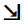
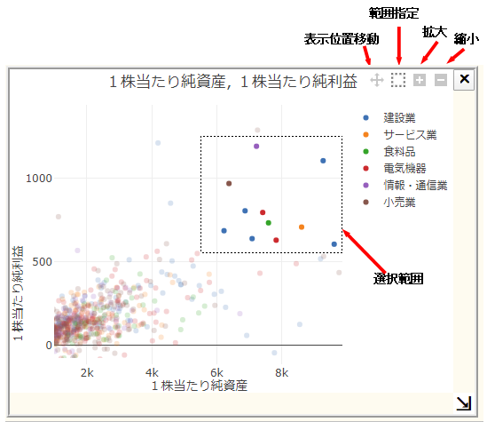

財務分析のサンプルアプリ
このアプリの説明は、
こちらのQiitaの記事
をご覧ください。
ヘルプ
業種を指定
散布図を追加
棒グラフを追加
折れ線グラフを追加
ＯＫ
キャンセル
業種を選択してください。 ( 複数選択可 )
ＯＫ
キャンセル

散布図のグラフの右上にマウスを持っていくと以下のようにボタンが4個表示されます。
範囲指定ボタンをクリックしてからマウスをドラッグすると、ドラッグされた範囲の会社が選択されます。
この状態で別のグラフを追加すると、新しいグラフには選択された会社が表示されます。
表示位置移動ボタンをクリックしてからマウスをドラッグした場合は、グラフの表示位置が移動します。

閉じる